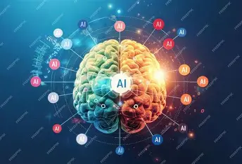

Kunstmatige intelligentie
Kunstmatige intelligentie, oftewel AI, wordt steeds vaker gebruikt in het dagelijks leven. AI kan bijvoorbeeld teksten maken, vragen beantwoorden, afbeeldingen herkennen en aanbevelingen doen.

AI is steeds meer onderdeel van ons dagelijks leven
Waar gebruik ik AI voor?
Ik gebruik ChatGPT op mijn Samsung Galaxy A26. Bijvoorbeeld wanneer ik hulp nodig heb bij mijn huiswerk of wanneer ik informatie over iets wil weten en niemand anders beschikbaar is om mijn vraag te beantwoorden.
Ik leer best wel veel van AI. Het kan onderwerpen op een andere manier uitleggen en mij helpen wanneer ik iets niet begrijp.
⚠️ Wel altijd controleren
Ik weet ook dat AI niet altijd de juiste informatie geeft. Daarom controleer ik belangrijke informatie voor de zekerheid.
Dat vind ik belangrijk, omdat een antwoord van AI overtuigend kan klinken terwijl het toch niet klopt.
AI op mijn telefoon
Mijn telefoon is een Samsung Galaxy A26. Op moderne smartphones wordt AI op verschillende manieren gebruikt. Denk bijvoorbeeld aan functies voor foto's, tekst, spraak en het verwerken van informatie.
Daarnaast gebruik ik zelf AI via ChatGPT wanneer ik vragen heb of hulp nodig heb.

📚 Leren
AI kan uitleg geven wanneer ik een onderwerp niet goed begrijp.

🔎 Informatie
Ik kan AI gebruiken om snel informatie over verschillende onderwerpen te krijgen.

🧠 Controleren
Ik controleer belangrijke informatie met andere betrouwbare bronnen.
Artikel over kunstmatige intelligentie
Voor dit onderdeel heb ik een artikel van Mediawijsheid.nl gekozen. Het artikel gaat over kunstmatige intelligentie en helpt om de mogelijkheden en aandachtspunten van AI beter te begrijpen.
📄 Het artikel
Titel: Kunstmatige intelligentie
Auteur: Niet vermeld op de webpagina
Bron: Mediawijsheid.nl
Publicatiedatum: Niet vermeld op de webpagina
Link naar het artikel: Lees het originele artikel
📝 Samenvatting
Kunstmatige intelligentie (AI) is technologie waarmee computers taken kunnen uitvoeren waarvoor normaal gesproken menselijke intelligentie nodig is. AI kan bijvoorbeeld gegevens verwerken, patronen herkennen en helpen bij het beantwoorden van vragen.
We komen AI op verschillende plekken tegen, zoals bij digitale assistenten, zoekmachines en aanbevelingen op sociale media. Ook generatieve AI, waarmee nieuwe teksten en afbeeldingen kunnen worden gemaakt, wordt steeds vaker gebruikt.
AI biedt voordelen, omdat het mensen kan helpen om informatie te verwerken en bepaalde taken sneller uit te voeren. Toch zijn er ook aandachtspunten. AI kan onjuiste informatie geven en vragen oproepen over privacy, betrouwbaarheid en het verantwoord gebruiken van technologie.
Daarom is het belangrijk om kritisch te blijven nadenken over AI en niet alles wat een AI-systeem zegt zomaar voor waar aan te nemen.
💭 Mijn mening
Ik vind AI een handige uitvinding, omdat ik het zelf gebruik om informatie te zoeken en moeilijke onderwerpen beter te begrijpen. Vooral bij schoolwerk kan AI helpen om iets op een andere manier uitgelegd te krijgen.
Toch vind ik dat je voorzichtig moet zijn. AI kan antwoorden geven die overtuigend lijken, maar niet helemaal kloppen. Daarom vind ik het belangrijk om informatie te controleren met andere betrouwbare bronnen.
Ik vind ook dat mensen moeten opletten met persoonlijke gegevens wanneer ze AI gebruiken. Naar mijn mening is AI vooral nuttig als hulpmiddel, zolang mensen zelf blijven nadenken en hun eigen keuzes blijven maken.
🎬 Video over AI
Bekijk de video hieronder voor meer uitleg over kunstmatige intelligentie en hoe AI wordt gebruikt.